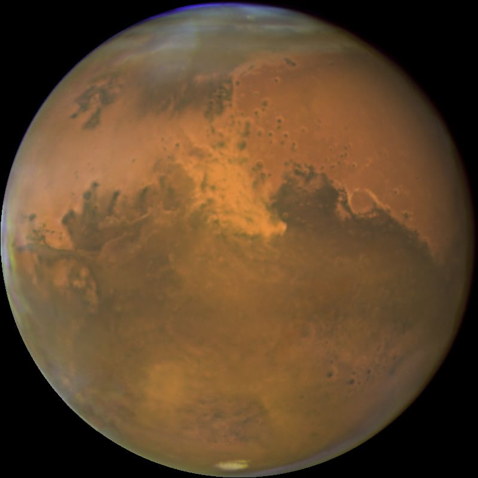

The
Solar
System
At the centre of our solar system is the Sun, a G-type main-sequence star. Through the process of nuclear fusion, 4 million tons of matter is converted into energy every second. This energy is the source of the Sun's light and heat, which radiates through space to the rest of the solar system and beyond.
In approximately 5 billion years the sun will exhaust its mass of hydrogen, beginning the process of becoming a red giant. As a red giant, the Sun will become so large that it will envelop Mercury, Venus, and probably Earth.
Surface temperature ~ 5,500 ˚C
Equatorial radius ~ 700,000 km
Mercury
The smallest and innermost planet in the solar system is Mercury. It is one of the four terrestrial planets, with a surface that appears heavily cratered.
Observation of Mercury from the surface of the Earth is easiest in twilight, either at dusk or dawn. At its brightest, it can reach an apparent magnitude of -2.48, brighter than Sirius, the brightest star in the night sky. However, it has a mean apparent magnitude of +0.23, becoming roughly the fifth brightest object in the night sky.
Surface temperature range: - 170˚C to + 449˚C
Equatorial radius ~ 2,500 km
Orbital period ~ 88 days
Venus
The next planet is the terrestrial planet, Venus. As a result of its dense atmosphere and its proximity to the Sun, Venus is the hottest planet in the solar system.
To the naked eye, Venus appears brighter than any other planet or star (apart from the Sun) with a mean apparent magnitude of −4.14. Venus is bright enough to be seen in a clear midday sky, however, it is more easily visible when the Sun is low on the horizon or setting.
Surface temperature ~ 480 ˚C
Equatorial radius ~ 6,000 km
Orbital period ~ 225 days
Earth
After Venus comes the largest of the terrestrial planets, Earth. It is the only place in the solar system known to harbour life. It has one natural satellite, the Moon, whose gravity influences the vast oceans of water on the planet.
Surface temperature range: − 89.2 ˚C to + 56.7 ˚C
Equatorial radius - 6,400 km
Orbital period ~ 365 days

Mars
The furthest terrestrial planet from the Sun is Mars. It shares many features with Earth, including valleys, deserts, mountains, and polar ice caps. It is often colloquially referred to as the red planet, due to the prevalence of iron oxide on its surface. Mars has two small natural satellites called Phobos and Deimos.
The mean apparent magnitude of Mars is +0.71. However, when Mars is at opposition from the Sun, it can be up to −3.0, making it one of the brightest objects in the night sky.
Surface temperature range: − 143 ˚C to + 35 ˚C
Equatorial radius: 3,400 km
Orbital period: 687 days
Jupiter
Beyond the asteroid belt surrounding the orbit of Mars, is the gas giant Jupiter. It is the largest planet in the solar system. The defining feature of Jupiter is its 'Great Red Spot', a violent storm on the surface of the planet that is larger than the Earth. There are 79 known moons of Jupiter, the four most massive of which are known as the Galilean moons.
At its brightest Jupiter's apparent magnitude is -2.94, making it the third brightest object in the night sky after the Moon and Venus. It has a mean apparent magnitude of −2.20.
Surface temperature at 1 bar level ~ - 108 ˚C
Equatorial radius ~ 71,000 km
Orbital period ~ 12 years

Saturn
Saturn is a gas giant and the 6th planet from the Sun. Saturn's pale yellow hue is due to ammonia crystals in its upper atmosphere. The defining feature of Saturn is its ring system, which is composed mostly of ice particles. There are 82 confirmed natural satellites of Saturn, not including the ring system. The largest of these is Titan.
Saturn is the most distant of the planets easily visible to the naked eye from Earth. Saturn appears as a bright yellowish point of light, with a mean apparent magnitude of +0.46.
Surface temperature at 1 bar level ~ - 139 ˚C
Equatorial radius ~ 60,000 km
Orbital period ~ 29 years
Uranus
The next planet is the ice giant Uranus. Uranus' atmosphere has a complex, layered cloud structure with water thought to make up the lowest clouds and methane the uppermost layer of clouds. There are 27 known natural satellites of Uranus.
At opposition, Uranus is visible to the naked eye in dark skies. However, with a mean apparent magnitude of +5.68, Uranus's brightness is near the limit of unaided visibility.
Surface temperature at 1 bar level ~ − 197.2 ˚C
Equatorial radius ~ 26,000 km
Orbital period ~ 84 years

Neptune
The ice giant Neptune is the farthest planet from the Sun in the solar system. It is slightly more massive than its near-twin Uranus but is both denser, and physically smaller. It has 14 known natural satellites.
With a mean apparent magnitude of +7.8, Neptune is not visible to the naked eye. It is the only planet in the Solar System that was discovered by mathematical prediction rather than by observation.
Surface temperature at 1 bar level ~ −201 ˚C
Equatorial radius ~ 25,000 km
Orbital period ~ 165 years
This website is only functional for browsers heights larger than 500px, please resize the browser window to be higher, or view on a larger device.
This website is only functional for browsers widths larger than 1100px, please resize the browser window to be wider, or view on a larger device.